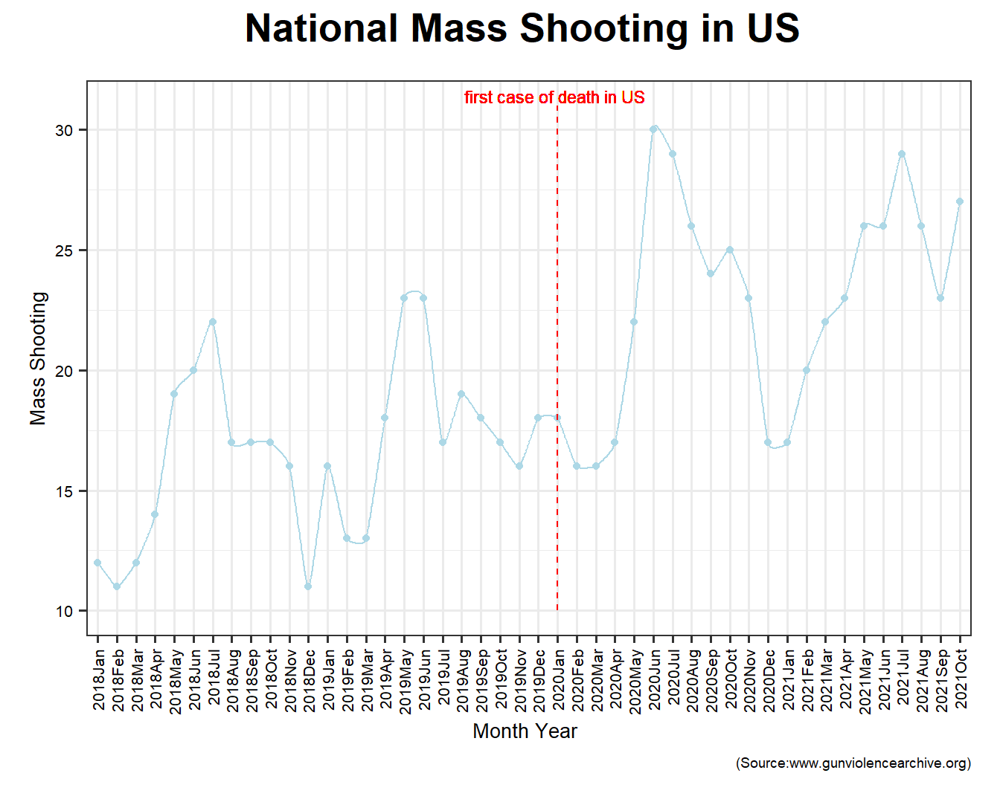
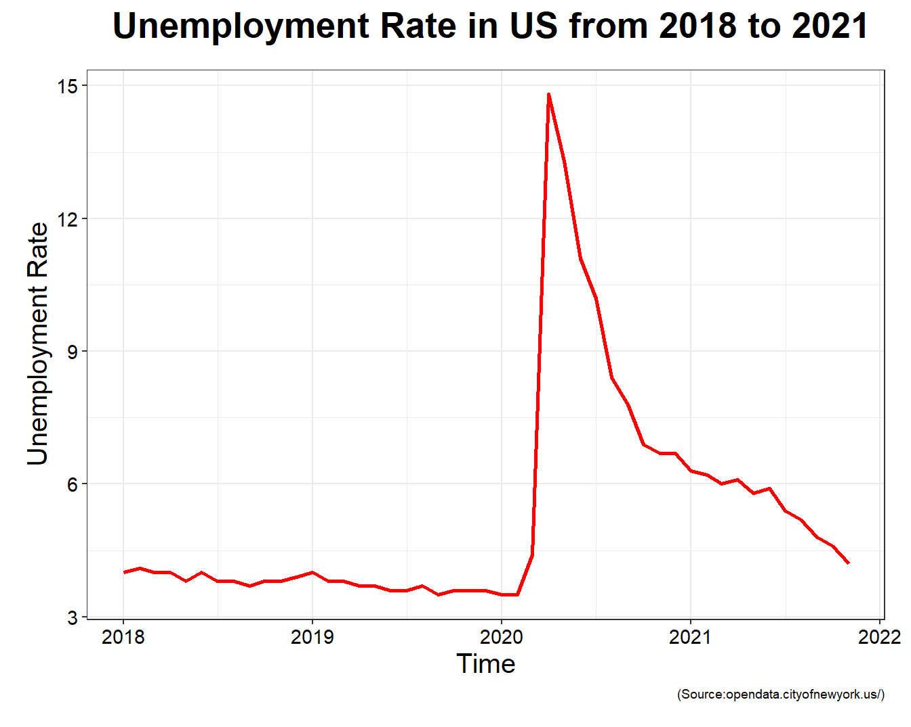
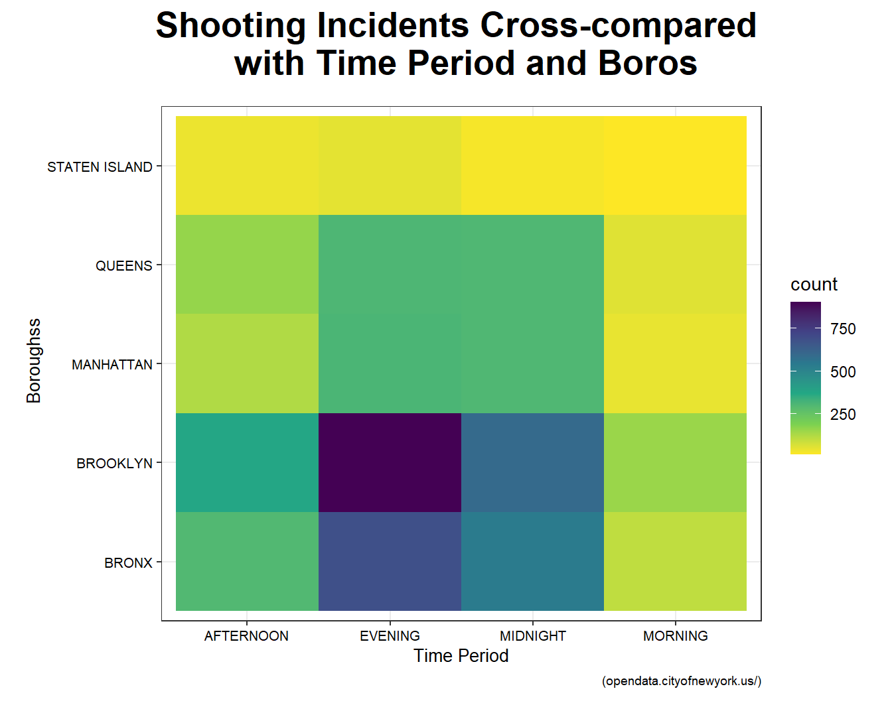

The plot above shows a fluctutation in national mass shooting number in US from January 2018 to October 2021. From the plot, we can reach two conclusions.First, there is a seasonal pattern in national mass shooting that in every year, basically, number of mass shooting will begin to increase from January and reach its peak in summer and then reduce to bottom. Second, 2020 saw a huge increase in mass shootings compared with previous years, and 2021 is trending a little lower. After data processing in R, there is nationally mass shootings jumped nearly 50% during a pandemic with crippling unemployment, violent protests and idle youth.

With the increase in shootings, we have paid more attention to shootings and became interested in what factors have affected the sharp increase in shootings. First of all, a set of data from major news newspapers enters our field of vision. Every day we can see reports of unemployment rate in the news. It is very interesting that the unemployment rate has been increasing since the outbreak of the new crown epidemic, which has the same trend as the increase in shootings. Therefore, we mapped the changes in the unemployment rate in the United States two years before and after the outbreak of the new crown. From this picture, we can see that two months after the outbreak of the new crown, the unemployment rate began to increase significantly, which is related to the self-quarantine policy that was just started. Later, society began to adapt to the epidemic, and there was a corresponding decline. However, because the epidemic caused structural damage to the economy, the unemployment rate has remained at a high level ever since.
We arrange 48 states in an ascending way according to the number of mass shooting from 2018 to 2021. As shown in the bar chart, top 8 states are Illinois, California, Texas, Florida, Pennsylvania, Louisiana, New York and Ohio respectively. As one of city in Illinois, Chicago Leads the nation in mass shootings, averaging about one per week.
We chose Minnesota for a more in-depth analysis. The top is the change in the unemployment rate in Minnesota, and the bottom is the change in the number of shootings. First of all, we can find that the number of shootings has obvious periodic changes, and the number of shootings in the summer is obviously high throughout the year. However, it can still be found that the peak after the epidemic has increased significantly, and the number of shootings during the same period has also increased significantly. At the same time, the unemployment rate has always been higher than the value of the unemployment rate under healthy economic conditions. Therefore, we infer that the two variables are still correlated.
this is a plot showing the number of shooting incidents in NYC from January 2018 to January 2021 in months. we can see a big increase in April 2020 which match the time when COVID-19 outbreak happened in NYC. We assume the COVID-19 outbreak caused the increase of unemployment which leads to a big increase in shooting incidents.
this plot compares the shooting incidents in five boroughs in NYC. we set April 2020 as the outbreak time and before covid means 365 days before April 2020 and post covid means 365 days after April 2020. we can see from the plot that Broolyn has the most shooting incidents and Staten Island has the least. we can the after covid, all boroughs increases in shooting incidents numbers while the order remains the same.

This plot cross-compared time periods and five boroughs in New York City. We divide a day into four parts: 0 - 6 am is midnight, 6 - 12 am is morning, 12 - 18 pm is afternoon and 6 - 12 pm is evening. the darker the block is ,the more shooting incidents happen in this boroughs at this period of a day. As shown in the plot, we can find that Staten Island is the safest borough in which there are very few shooting incidents occurred here. According to a news report, Staten Islanders are roughly three times more likely to own legal handguns than Brooklyn residents, and about four times more likely to own legal handguns than people in Manhattan and the Bronx. This could be one reason for explaining the higher safety of this borough that more people own a gun, more likely criminals need to bear a risk of death, which deter potential criminals and keep the community’s safe. In terms of time, evening and midnight are more dangerous and in term of borough Bronx and Brooklyn have most shooting incidents.